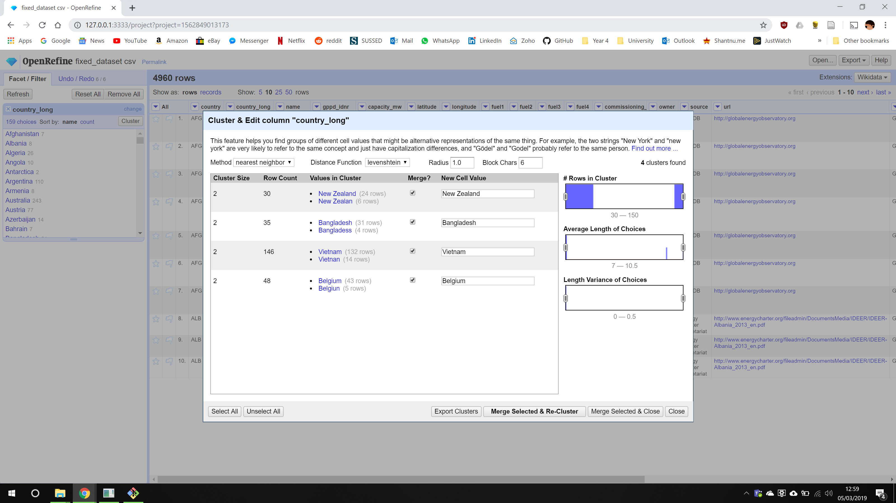

A number of errors could be found manually or using simple tools and fixed using Excel.
For this type of error, I could manually scroll through the CSV file after opening it in Excel and shift the columns back by one. This was possible because large sections were affected at a time, making the error easy to find.
Countries which were affected by this issue were: Australia, Chile, Equador, India, Italy and United Kingdom.
This type of error was found using a tool called CSVLint. This website parses a CSV file and shows the locations of the blank lines. There were lots of empty rows found, e.g. 479, 536, 591, 692, etc.
This issue could be easily fixed using Excel by selecting all data then "Data" > "Filter". Then selecting the first column and filter only blank items. Delete all the items here which are completely empty.
Some rows did not follow of the overall structure of the CSV file. For example, the image above shows an example where there is a row called "ALL IRAQ" which acts as a total of of the values for Iraq. The only other country with this was India.
I deleted both of these rows.
Open Refine is an open-source software developed by Google. It allows for easy parsing of data in various formats (such as CSV) and provides a range of tools to make it easy to find and correct errors.
After loading the CSV file into Open Refine, we can click on the arrow next to a column header and select "Facet" > "Text Facet". This gives us a list of all unique values in that column - making it easy to spot errors. Using this we can edit incorrect values such as "United Kingdon", which edits all related rows and combines them with the correct version.
To make this process even faster, you can use the cluster tool to automatically find similar looking terms and merge them together. This is shown below:
There were two main types of errors within this category. The first is shown above where the column values, which should be numerical, has a "(gwh)" appended on it.
To fix this, I converted the column to numerical values, which can be done using a transformation, and then fixed the ones which couldn't be converted. There was an option to apply the fixes to all similar rows which made this easy. Any 'Nil' values were converted to 0.
The second type of error in this category was missing data. Although there were a lot of blank values across the dataset which are hard to fix, there were some cases where some research could be done to find the missing values.
For example, there were invalid values ('#NAME?') of 'Capacity' data for Lujan De Cuyo Coal (ARG) and Berrimah Gas (AUS) power plants. Searching the names of these plants on Google led me to websites with capacity information, hence these could be filled in.
There were a number of minor errors which were also fixed using Open Refine.
This is similar to spelling errors, but could be deemed deliberate. The only example of vandalism I found was an entry called "netflix and chile" in a data entry for Chile's country name.
This was fixed using Open Refine in the same way as a spelling error.
Some countries in the dataset no longer exist. Although this isn't a huge problem as they will be ignored when rendering the map visualisation, it would be better if they are integrated with existing countries.
Therefore, for countries such as Rhodesia and USSR, I decided to merge them with their modern counterparts - Zimbabwe and Russia, in this case.
This error was found after creating the visualisation. Some values, i.e. for generation, were unrealistically large. For example, a value for Uruguay for a biomass powerplant.
Errors such as these were fixed by looking at other similar data and making an educated guess. The value for the Uruguay plant started with 4 and other biomass plants from Uruguay had a generation value of 40,000-50,000. Hence, the value was adjusted to this range.